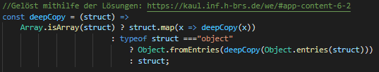
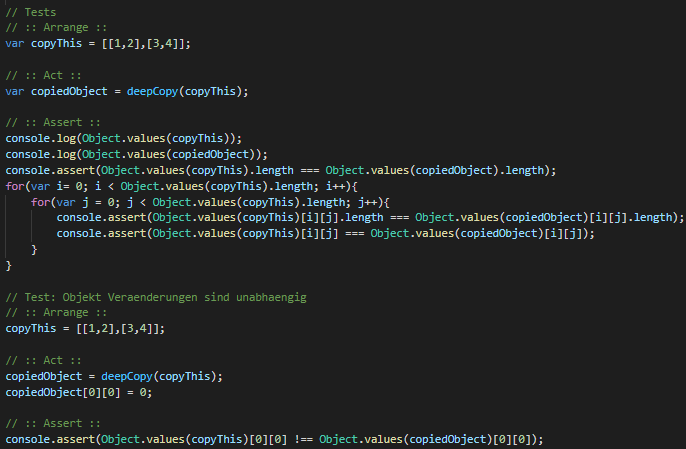

DeepCopy
Schreiben Sie eine rekursive Funktion deepCopy( struct ) als ES6-Ausdruck, so dass beliebig geschachtelte Arrays und Objekte struct tiefenkopiert werden können. Verwenden Sie zu diesem Zweck den konditionalen ternären Operator, Array.map(), Object.fromEntries() und Object.entries(). Verwenden Sie dabei nur Arrow Functions und Ausdrücke, keine Anweisungen, keine Blöcke. Verwenden Sie nicht die JSON-Methoden.
Implementierung:
Tests:
